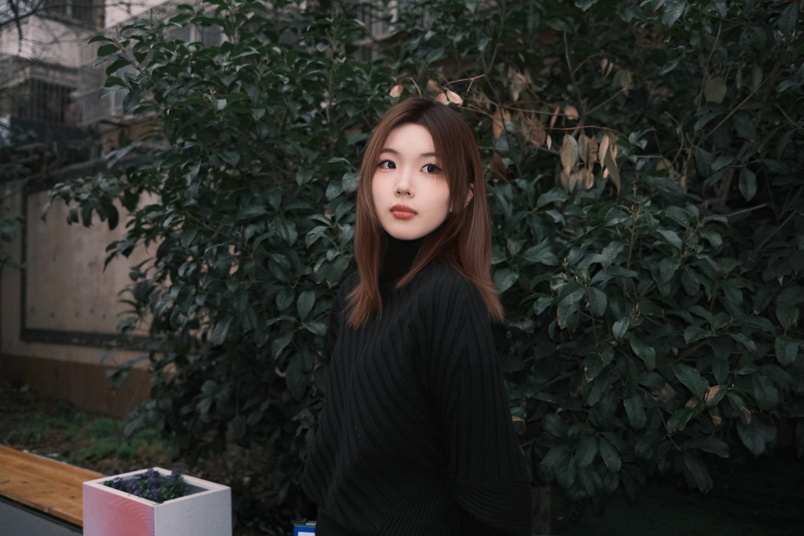

About
me
Painter & Visual Artist

I'm Laura.Z. I'm studying illustration at OCADUniversity now.
I like to try different paintingmedia, especially good at using water andcoloured lead.
My creation will use more mixedmedia. My works are deeply influenced by thedetailed observation of nature, emotionalmetaphors, and the integration of painting andpersonal narrative.
I usually start from thedetails, texture, plants, water, and expand theminto a symbolic visual world.
Looking forward to communicating with you.Thank you for your attention.